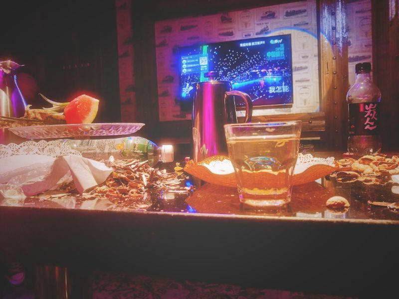
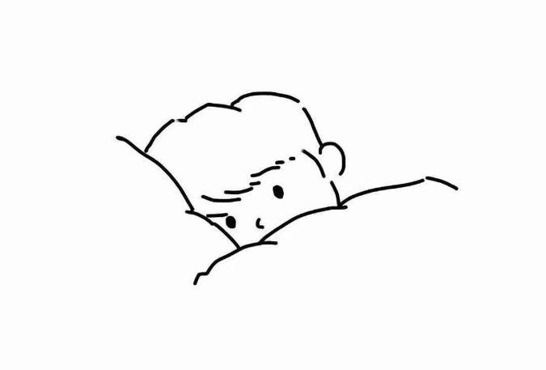
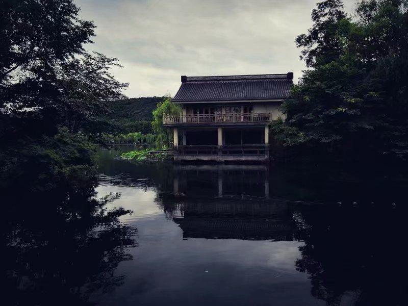

关于我
只言片语
生活片段
所有的记忆都是潮湿的。

倚在栏杆呕吐 打烊的饭店烟雾缭绕 店员点燃了最后一支烟 宿舍楼旁 外卖员从围墙翻下 将奶茶递给 惊愕的顾客 云上的咖啡店 我对着柜台说 请给我一杯 樱花之恋 蹲在电梯的角落里 眼泪滴在地上的声音
2019-9-30

恍惚之中 我从他的身上看见了我的影子 奈何影子终究是虚幻的 它既不是用来悔恨的苦情水 也不是回到过去的传送门 最多 只能是一本泛黄的旧书 万籁俱寂 而我却听到那笛声
2019-1-16

雨滴 无声无息 将孤寂化为泪语 时光不老 而白驹过隙 终将抹去石碑上的印记 只怕 半夜初醒 又是一场故梦 我念念不忘的 不是西湖 而是西湖之人 今夜 秋风又起 眼前却不是当年的模样
2018-10-19